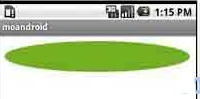

Android 解析Drawable（一）
Android SDK提供了一个强大的类Drawable，Drawable这个抽象类到底代表了什么，如何使用？Drawable是个很抽象的概念，通过简单的例子程序来学习它，理解它。先看个简单的例子，使用Drawable的子类ShapeDrawable来画图，如下：
public class testView extends View { private ShapeDrawable mDrawable;
public testView(Context context) {
super(context);
int x = 10;
int y = 10;
int width = 300;
int height = 50;
mDrawable = new ShapeDrawable(new OvalShape());
mDrawable.getPaint().setColor(0xff74AC23);
mDrawable.setBounds(x, y, x + width, y + height);
}
protected void onDraw(Canvas canvas) {
super.onDraw(canvas);
canvas.drawColor(Color.WHITE);// 画白色背景
mDrawable.draw(canvas);
}
}

这个简单的例子可以帮我们理解什么是Drawable，Drawable就是一个可画的对象，其可能是一张位图（BitmapDrawable），也可能是一个图形（ShapeDrawable），还有可能是一个图层（LayerDrawable），我们根据画图的需求，创建相应的可画对象，就可以将这个可画对象当作一块“画布（Canvas）”，在其上面操作可画对象，并最终将这种可画对象显示在画布上，有点类似于“内存画布“。
上面只是一个简单的使用Drawable的例子，完全没有体现出Drawable的强大功能。Android SDK中说明了Drawable主要的作用是：在XML中定义各种动画，然后把XML当作Drawable资源来读取，通过Drawable显示动画。下面举个使用TransitionDrawable 的例子，创建一个Android工程，然后再这个工程的基础上修改，修改过程如下：
1、去掉layout/main.xml中的TextView，增加ImagView，如下：
<ImageViewandroid:layout_width="wrap_content
android:layout_height="wrap_content
android:tint="55ff0000
android:src="@drawable/my_image"/>
2、创建一个XML文件，命名为expand_collapse.xml，内容如下：
<?xml version="1.0" encoding="UTF-8"?><transition xmlns:android="http://schemas.android.com/apk/res/android">
<item android:drawable="@drawable/image_expand"/>
<item android:drawable="@drawable/image_collapse"/>
</transition>
需要3张png图片，存放到res/drawable目录下，3张图片分别命名为：my_image.png、image_expand.png、image_collapse.png。